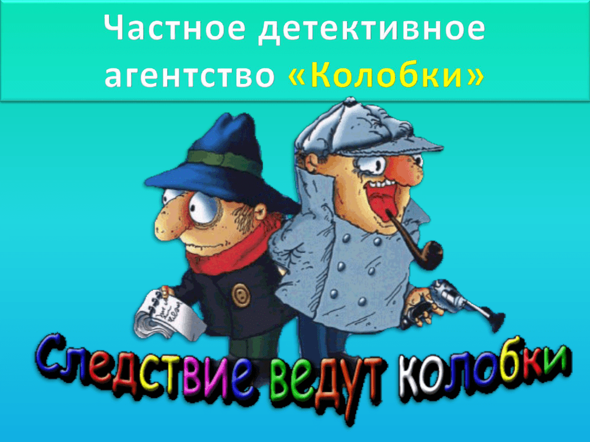

Колобок идет по следу - продолжение 2.
Эдуард Успенский
Следствие второе
ПОХИЩЕНИЕ ВЕКА
Колобок был сова, а Булочкин - зяблик. Но Колобок был начальник, и поэтому они больше любили работать по вечерам. Только не думайте, что днем они не работали. Они работали и днем, и вечером, и утром… Просто больше всего они любили работать вечером.
Сегодняшний вечер был вялым и теплым. Телефон звонил редко - один раз в час.
Вот он опять зазвонил вялым безынициативным звонком. Булочкин немедленно цапнул трубку:
- Алло! Аппарат Колобка у аппарата! - бодро сказал он, пытаясь вдохнуть жизнь в вялое течение событий. Но ничего не вышло. Трубка сказала вялым женским голосом:
- Это НПДД?
- Так точно!
- НПДД, НПДД, у нас на чердаке кошка мяучит музыку Шаинского, а мы с внучкой Бетховена разучиваем. Помогите!
- Заказ принят! - сказал Булочкин. - Кошку поймаем и переучим. Сообщайте адрес.
Он записал адрес в книгу заказов и спросил Колобка:
- Шеф, можно отправляться?
- Подождите, Булочкин, еще не вечер! - сказал Колобок, хотя уже был вечер. - Думаю, что сегодня будут более интересные дела.
И точно - телефон зазвонил более инициативно.
- Колобок, Колобок, - сказал мужской голос, - у нас пропала собака.
Колобок подвинул к себе печатную машинку:
- Давайте словесный портрет.
- Чей?
- Собаки, разумеется.
- Собака породы овчарка, - начал голос, - высокая, средней лохматости. По окраске брюнето-шатенка. Повышенной зубастости. Имеет шесть медалей. Охраняла здание вместе со сторожем. Кличка Рекс. Сторож тоже пропал.
Колобок все это быстро напечатал.
- Давайте словесный портрет.
- Чей? - спросил голос.
- Сторожа.
- Высокий, с уклоном в лысизм. Зовут дядя Коля. Характер рязанский, покладистый. Имеет сына десяти лет. Сын тоже пропал. Дать словесный портрет?
- Достаточно, - сказал Колобок голосу. - Мне все ясно. А кем вы ему доводитесь?
- Кому - сыну или сторожу?
- Рексу! Пропавшей собаке.
- Я - директор учреждения. Дать словесный портрет?
- Спасибо, не надо. Я все понял. Товарищ директор, берите свою жену и детей и поезжайте в наш парк. Сегодня здесь выставка служебно-сторожевых собак. Здесь вы найдете и вашего сторожа, и вашего Рекса.
Человек в телефоне ужасно обрадовался и долго повторял:
- Спасибо, товарищ Колобок. Спасибо, товарищ Колобок.
- Пожалуйста, товарищ директор склада, - сказал Колобок и повесил трубку.
Но телефон моментально зазвонил снова:
- А как вы догадались, что я директор склада? А не директор музея или театра?
- Очень просто. Театры у нас пока не охраняют собаки повышенной зубастости. Привет вашему дяде Коле.
Булочкин, как всегда, был потрясен железной логикой железного Колобка. Он взял книгу заказов и вписал туда, как было раскрыто это таинственное исчезновение, как была найдена сторожевая собака, буквально в присутствии заказчика. И даже более того, буквально без присутствия заказчика.
Но Колобок был недоволен:
- Это все семечки! Ничего интересного. Но чует мое сердце - где-то зреет серьезное преступление.
И оно зрело. Созревало и наливалось. В это время в другом конце города…
В это время в другом конце парка по аллее шел мороженщик. Каких много. Обыкновенный труженик тележки. Но шел он без тележки и громко кричал:
- Караул! Преступление века!
Прохожие с любопытством смотрели на него. И он кричал дальше:
- Похищено сто пачек мороженого! Ограбление пенсионера. Милиция бессильна.
- Почему? - спрашивали прохожие.
- Они не очень любят мороженое. Если бы пельмени пропали…
И он гордо шел дальше в направлении НПДД, сообщая всем о происшедшем. Человек изъяснялся с людьми как бы заголовками газет:
- В городе действует организация!
- Сегодня мороженое, завтра - "Дом игрушки".
- Планета спрашивает: "Кто будет отвечать?"
Крико-вопли все больше приближались к НПДД, где нервно разгуливал Колобок в ожидании крупного дела. Он был в безрукавке, в мягких валенках, сделанных на заказ, в теплой кепке, потому что приближалась осень.
И вот на пороге возник мороженщик:
- Я говорю от имени тружеников планеты Земля! Мороженого больше не будет!
- А что? - спросил Колобок. - Закрыли ваш хладокомбинат?
- В городе действует шайка! Милиция бессильна.
- Будем вооружать население! - спокойно и с достоинством ответил Булочкин, показывая мороженщику, что есть… имеется выход, что не все еще потеряно.
- Фамилия? - строго спросил Колобок.
- Я - труженик планеты Земля.
- Фамилия, - повторил Колобок.
- Коржиков.
- Рассказывайте все по порядку, товарищ Коржиков, - приказал Колобок.
- И обращайте внимание на подозрительные подробности, - добавил Булочкин.
- Хорошо, - сказал мороженщик. - Дело было так. Светило солнце. Я шел и продавал мороженое. Кругом гуляли покупатели, целая улица покупателей.
- А подозрительные подробности? - напомнил Булочкин.
- Хорошо, - понял мороженщик. - Светило подозрительное солнце. Дул подозрительный такой ветер. Кругом гуляли подозрительные типы. Целая улица типов.
- Иностранных инопланетян не было?
- Были, - сразу согласился мороженщик. - Были подозрительные иностранные планетяне, замаскированные под наших неподозрительных прохожих.
- А дальше? - спросил Колобок.
- Вдруг замяукал подозрительный котенок. Я подозрительно пошел за ним. И кто-то украл мою подозрительную тележку.
Колобок выслушал все это и сказал:
- Еще раз, пожалуйста, все расскажите. Только подробнее, пожалуйста.
- Хорошо, - согласился мороженщик Коржиков. - Светило такое подробное солнце. Дул такой подробный ветер. Кругом подробно гуляли такие подробные прохожие. Потом замяукал такой подробный котенок. Я подробно за ним пошел. И кто-то украл мою подробную тележку.
- Не густо! - сказал Колобок.
- Точно! - согласился мороженщик. - Светило такое негустое солнце. Дул негустой такой подозрительный ветер. Кругом негусто гуляли такие негустые прохожие. Потом замяукал такой негустой котенок. Я негусто так пошел за ним, и кто-то украл мою йегустую тележку.
- Ну что? - спросил Колобок у Булочкина.
- Туманно, шеф! - сказал тот.
Мороженщик тотчас же согласился:
- Светило такое туманное солнце. Дул такой туманный ветер. Кругом туманно так прогуливались прохожие. Потом замяукал такой затуманенный котенок. Я затуманенно пошел за ним. И кто-то в тумане украл мою тележку. Что теперь будет?
- Все будет в порядке, - сказал Колобок. - Дело поручаем лучшему специалисту. Булочкин, на выход.
- Есть! - ответил Булочкин. - Сверим часы.
- Сверим.
Все стали сверять часы. Часы Колобка и Булочкина бились секунда в секунду, а часы мороженщика остались лежать в тележке, в ящике для сдачи и денег.
- Куда сдать котенка? - спросил мороженщик.
- Какого котенка? - спросил Колобок.
- Которого я нашел на месте преступления, - сказал Коржиков. Он вынул из кармана фартука замечательного рыжего котенка.
Колобок посмотрел на котенка в увеличительное стекло.
- Сибирский! - сказал он.
- Может быть, преступник из Сибири? - предположил Булочкин. - И надо его оставить в деле.
- Забирайте его с собой! - приказал Колобок. - Может, он наведет вас на след.
Булочкин и мороженщик ушли. Опускавшееся за парк солнце заливало все золотом. Солнечный луч, попавший в затылок Колобка, наполнил его желтым свечением. Колобок напоминал подсвеченную изнутри головку сыра и чувствовал себя неловко.
Он задернул шторы, взял в руки балалайку и заиграл. Все, кто давно знал Колобка, поняли - Колобок Думает. И затихло все вокруг НПДД.
Тем временем Булочкин и Коржиков приблизились к месту пропажи. В голове у Булочкина вертелись последние слова Колобка: "Он может навести вас на след". Поэтому он попросил у мороженщика котенка, пустил его на землю и приказал: "След!"
Котенок с места в карьер пробежал сто метров к ближайшей урне, сел и стал жевать селедочный хвост около нее.
- Ты неправильно нас понял, - сказал Булочкин. - Нам не нужна селедка. Нам нужна тележка.
Котенок с места не двигался и усиленно хрустел хвостом.
Вдруг мороженщик схватил за руку Булочкина:
- Смотрите!
По аллее шла дворничиха с метелкой и толкала перед собой тележку с мороженым.
- Это моя тележка! - сказал Коржиков.
Булочкин включил походную рацию:
- Колобок, Колобок, мы вышли на преступника. Будем брать.
- Берите, - шепотом сказал Колобок. - Но острожнее, смотрите, чтобы не взяли вас.
- Преступник-ца вооружен! - тихим лозунгом сказал Коржиков Булочкину.
- Чем вооружен? - переспросил Булочкин.
- Метлой вооружен, - ответил мороженщик.
- Будем брать вместе с метлой! - решительно сказал Булочкин. - Применяю отвлекающий прием.
Он подошел вплотную к дворничихе с тележкой и сказал, показывая на небо:
- Смотрите, лопаты летят!
- Какие лопаты? Почему летят? - удивилась дворничиха и стала внимательно изучать небо.
В эту секунду Булочкин пристегнул ее цепочкой с почтовым замком к ручке тележки. Такими цепочками сельские велосипедисты приковывают свои велосипеды к поручням магазинов.
- Колобок, Колобок! - сразу же сообщил он в радиотелефон. - Опасная преступница задержана.
- Ваша игра проиграна! - обернулся он к дворничихе. - Будем вас сдавать в милицию.
- Какая игра? - удивилась дворничиха. - Я и сама шла сдавать эту тележку в милицию.
- Булочкин, Булочкин, немедленно освободите эту блондинку в очках и принесите ей извинения.
Булочкин счастливо оторопел. Вот это да! На таком расстоянии Колобок узнал, что дворничиха - блондинка. Он отстегнул дворничиху и произнес в микрофон:
- Продолжаем расследование.
- Ой! - вдруг сказала женщина Булочкину и Коржикову. - Смотрите, лопаты повернули и назад летят.
- Какие лопаты? - удивились потерпевший и расследующий. - Зачем повернули?
- Чтобы проучить кое-кого! - ответила дворничиха и махнула метлой по ногам двух мужчин. Они оба рухнули, как подкошенные.
- Продолжаем работу, - сказал неунывающий Булочкин.
- Работа продолжается! - оформил его мысль в лозунг мороженщик Коржиков. - Несмотря ни на что!
Они встали на ноги, и Булочкин приступил к осмотру тележки и составлению версий.
- Начинаем предварительный досмотр. Тележка цела? Колеса на месте?
- На месте, - ответил мороженщик Коржиков. - А где же им быть? Кому они нужны, такие кривоногие?
- Вы мне вопросов не задавайте, - одернул его Булочкин. - Отвечайте четко по-военному: "Так точно". Повторяю: "Тележка цела? Колеса на месте?"
- Так точно, по-военному. Кому они нужны, такие кривоногие?
- У вас есть версии?
- Так точно. Никаких.
- А у меня есть. Сразу видно, что вы не в нашей системе работаете. Скорее всего действовала шайка. Интересно, сколько их было. Сколько мороженого исчезло?
- Пятьдесят пачек. Остальные здесь, - ответил мороженщик. - И еще здесь лежит треугольная пуговица с двумя дырочками, металлический рубль и вязаная шапочка с помпончиком.
Булочкин включил рацию и доложил обо всем Колобку.
- Продолжайте поиски, - сказал Колобок. - Я буду разрабатывать свою версию.
Все ниже к закату склонялось подозрительное солнце. В парке стихало, и все сильнее слышен был шум города. Подозрительные прохожие покидали парк вместе с подозрительными детьми. Булочкин думал.
- Тележка отсутствовала полчаса. Сколько пачек мороженого может съесть один человеко-преступник за это время?
- Так точно, не знаю! - сказал мороженщик.
- Нужно узнать. Выяснив это, мы узнаем, сколько человеко-преступников было. Проведем следственный эксперимент.
- Можно принять участие в эксперименте? - спросил Коржиков.
- Вы все продумали?
- Все.
- Тогда разрешаю. Сверим часы.
Часы Булочкина показывали семь часов, часы Коржикова замерзли и ничего не показывали из-за инея. Тем не менее эксперимент начался. Надо было выяснить, сколько было человек - расхитителей государственного мороженого?
Освещенные подозрительным солнцем, Булочкин и Коржиков ели мороженое.
А Колобок играл на балалайке в уютном НПДД.
- Шапочка в тележке, что бы это значило?
Под веселую мелодию плясали комары на светлом окне. Телефон молчал. Очевидно, собака повышенной зубастости нашлась вместе со своим брюнето-шатеновым сторожем. И тут Колобка осенило. Он включил переговорное устройство.
- Булочкин, Булочкин, что у вас на голове?
- Кепка, шеф. Фуражного типа.
- Очень хорошо. Попробуйте достать из тележки эту самую вязаную шапочку.
- Слушаюсь, шеф.
Послышался треск открываемой дверцы, потом голос Булочкина:
- Готово, шеф.
- Так. Что теперь у вас на голове?
- Вязаная шапочка, шеф.
- Почему?
- Потому что фуражка упала в тележку.
- Отлично, Булочкин. А как с вашими пуговицами? Все на месте?
- Нет, шеф, одна оторвалась и тоже упала.
- Спасибо, Булочкин.
- Можно продолжать эксперимент?
- Можно, продолжайте.
И Булочкин с Коржиковым смело углубились в мороженое.
- Я уже три пачки съел, - сказал Булочкин.
- А я четыре, - сказал Коржиков. - У меня опыта больше.
- Что-то стало холодать! - сказал Булочкин.
- Что-то стало нагреваться! - сказал Коржиков. - У меня жар!
- А у меня озноб!
- Мы заболели. Гибель на трудовом посту! - стал выкрикивать мороженщик. К нему вернулось газетно-заголовочное состояние. - Они не вернутся! Их было двое! Люди жертвуют собой!
Булочкин включил рацию:
- Колобок, ты слышишь нас?
- Внимание, - отвечает Колобок. - Вызываю для вас "скорую помощь". Держитесь.
Булочкин и Коржиков взялись друг за друга. Булочкин сурово молчал, а Коржиков выкрикивал:
- Эксперимент не удался! Их ждет больница! Планета плачет!
Он даже выкрикнул один лозунг, явно опережающий события:
- Медицина бессильна! Им поможет только чудо!
В парк въехала "неотложка" с красным крестом на верхней фаре, и наших больных увезли.
И вот уже тихая больничная палата. Не совсем тихая, потому что Коржиков постоянно кричит:
- Колобок о нас забыл! Преступники на свободе! Мороженщики всего мира протестуют! Мы погибаем в больницах, а кое-кто даже не думает о нас!
И тут дверь в палату распахнулась и вошел Колобок. Он был в белом халате и в тапочках на босу ногу, с трубкой.
- Колобок ни о ком не забывает. Он знает все.
- Да?! - закричал неуемный Коржиков. - А где же преступники?
- Преступники вокруг нас, - ответил Колобок. - Посмотрите, кто лежит на соседних койках.
И сразу на всех соседних койках встали мальчики:
- Мы больше не будем! - сказали они сиплыми голосами.
- Попались! - закричал мороженщик. - Как же вам не стыдно бесплатно брать государственное мороженое?
- А мы не бесплатно, - сказали мальчики. - Мы рубль положили.
- И котенка!
- Ха-ха-ха! - сказал Коржиков. - Это планета смеется. Но котят еще в банк не принимают! Живая валюта - нужна ли она нам?!
- Нас теперь арестуют? - спросили мальчики.
- Ни за что! - сказал мороженщик Коржиков. - Раз вы признались, я за вас заплачу. Но котенка я вам не отдам. Я к нему прирос. Продавцы покидают больницы! План ведет нас в путь!
Он быстро выздоровел и оделся. И ушел. Колобок и Булочкин ласково смотрели ему вслед и думали: "Как хорошо, что ему хорошо. Значит, не зря мы несем тяжелую вахту. Пусть всегда будет солнце".
На своих кроватях сидели исправившиеся мальчики и восторженно смотрели на знаменитого Колобка.
- Шеф, - спросил Булочкин. - А как вы догадались, что дворничиха - блондинка в очках?
- Очень просто, - сказал Колобок. - Мой метод - внимание плюс память. Она же у нас в парке шестой год работает. Ее фотография на доске Почета у входа висит. Рядом с моей, между прочим, товарищ Булочкин.